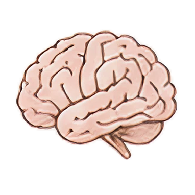
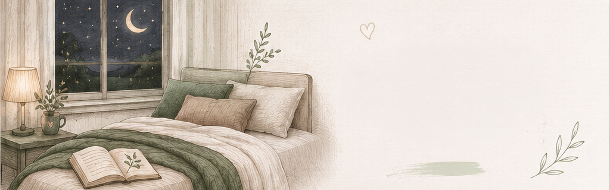
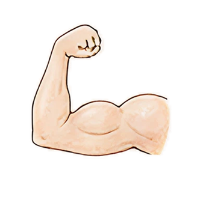
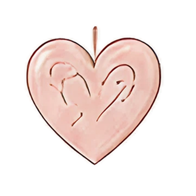
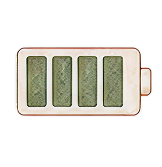
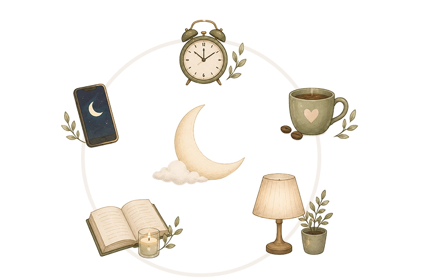

המוח מתארגן מחדש
במהלך השינה המוח מעבד מידע, מחזק זיכרונות ומנקה עומס.

השינה משפיעה על האנרגיה, מצב הרוח, הריכוז והבריאות שלנו. לפעמים השינוי הכי משמעותי באורח החיים מתחיל דווקא בלילה.


במהלך השינה המוח מעבד מידע, מחזק זיכרונות ומנקה עומס.

השרירים נבנים מחדש ומערכות הגוף עוברות תהליכי התאוששות.

שינה איכותית יכולה לעזור להפחתת מתח ולשיפור מצב הרוח.

הגוף ממלא מחדש את מאגרי האנרגיה לקראת יום חדש.
שינה איכותית מתחילה בהרגלים קטנים ועקביים. אחד הדברים החשובים ביותר הוא שמירה על שעות שינה קבועות, כך שהגוף יוכל לפעול בהתאם לשעון הביולוגי הטבעי שלו. בנוסף, מומלץ להפחית שימוש במסכים לפני השינה, משום שהאור הכחול עלול לעכב את תחושת העייפות ולהקשות על ההירדמות.
גם לצריכת קפאין בשעות הערב יש השפעה על איכות השינה, ולכן כדאי להעדיף משקאות מרגיעים יותר לקראת סוף היום. לצד זאת, יצירת טקס שינה קבוע – כמו קריאת ספר, מקלחת חמימה או תרגילי נשימה – יכולה לעזור לגוף להבין שהגיע הזמן להוריד קצב.
